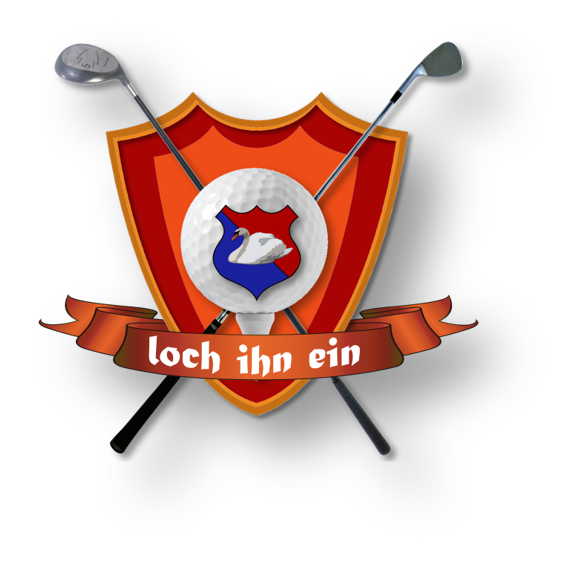

LOCH IHN EINSeit über 20 Jahren schlagen wir gemeinsam im Golfclub Bremer Schweiz ab. Eine starke Gemeinschaft auf und neben dem Platz.
Was vor mehr als zwei Jahrzehnten mit drei golfbegeisterten Gründungsmitgliedern begann, ist heute eine fest zusammengewachsene Truppe von 12 Herren. Als private Freundesrunde im Golfclub Bremer Schweiz teilen wir seit vielen Jahren die Leidenschaft für den Sport.
Fast jeden Samstag schlagen wir auf den Bahnen unseres Heimatclubs zu unserer gemeinsamen Runde ab. Bei uns stehen der sportliche Ehrgeiz auf dem Grün und der Spaß am Spiel an erster Stelle.
Doch unsere Gemeinschaft endet keineswegs am 18. Loch: Ob gemeinsame Golf-Urlaube, stimmungsvolle Weihnachtsfeiern oder sommerliche Grillabende – auch abseits des Platzes verbringen wir am liebsten Zeit miteinander, sehr gerne auch zusammen mit unseren Partnerinnen.
Freundschaft, Tradition und die Leidenschaft fürs Golfen – das ist LOCH IHN EIN.
Tradition, Wettkampf und geselliges Beisammensein seit über zwei Jahrzehnten.
Jede Woche schlagen wir gemeinsam im GC Bremer Schweiz ab und ermitteln unsere Spieltag-Sieger.
Regelmäßige Ausflüge und gemeinsame Trips auf die schönsten Golfplätze im In- und Ausland.
Events, Sommerfeste und Feiern – die Freundschaft reicht weit über das 18. Grün hinaus.